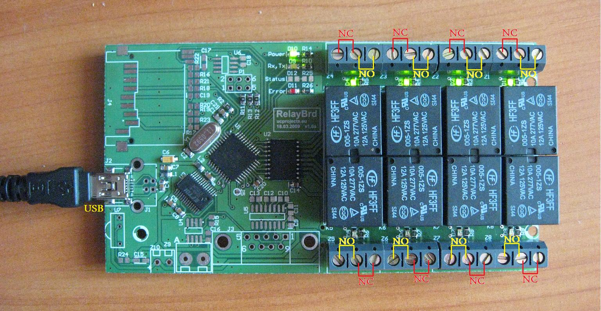

A cross-platform controller for managing an 8-channel relay power strip over serial/USB. Implements a hand-rolled binary protocol at 57600 baud with CRC8 checksums for reliable communication. The repository ships two parallel front-ends: a small Linux CLI built in C with CMake, and a feature-rich Windows GUI built in C++ Builder 6.0 with VCL.
The Linux side is intentionally minimal but production-ready: native termios for
serial configuration (no shell-out to stty, no command-injection surface), reply
validation on every received frame, and a state file + systemd unit so the
board's last known configuration is automatically restored on boot or after a power loss.
The Windows side adds a tray-resident GUI with per-relay scheduling, a TCP server for remote
control, and Windows autostart via the registry.
All communication uses a fixed 5-byte frame at 57600 baud, 8N1:
0x55 — sync byte (start of frame)0x01 — device address (USB/RS-232)'S' set, 'O' on, 'F' off, 'G' get status
The board responds to a Get command with a frame whose command byte is
'R' and whose data byte is the relay states as a bitmask (bit 0 = relay 1,
bit 7 = relay 8). Every received frame is validated for sync byte, device address, command
byte, and CRC8 before its contents are trusted.
power_strip.state as a single hex byte; for single-relay operations the program first reads the board's own state with a G request and then sends the updated mask, keeping the file consistent with hardware even if it was edited or deleted./power_strip restore reads the saved bitmask and reapplies it in a single S frame — perfect for systemd boot restorepower_strip.conf (line 1 = serial device, lines 2–9 = human-readable labels)1 on any error — bad arguments, missing config, serial I/O failure, malformed reply, CRC mismatch — with details on stderr./power_strip status # query and refresh power_strip.state ./power_strip allon # turn all relays on ./power_strip alloff # turn all relays off ./power_strip 3 on # turn relay 3 on ./power_strip 3 off # turn relay 3 off ./power_strip restore # reapply last saved state
A small oneshot unit reapplies the last-known relay state on every boot — invaluable after a power loss, since the board itself does not preserve state across reboots.
[Unit] Description=Restore RelayBoard relay state on boot After=local-fs.target [Service] Type=oneshot WorkingDirectory=/opt/power_strip ExecStart=/opt/power_strip/power_strip restore [Install] WantedBy=multi-user.target
termios, -Wall -Wextra -pedantic warning-cleanlinux/ (CLI), caly program/ (Windows GUI), klient sterowanie/ (Windows network client), and Specyfikacja protokolu.txt (Polish protocol spec)cd linux mkdir build && cd build cmake .. make ./power_strip status
Open the .bpr project file in C++ Builder 6.0 and build (Project → Build All).
The standalone network client lives in klient sterowanie/ as a separate .bpr.
Check out the project on GitHub: Relay Board Controller on GitHub
Back to Portfolio